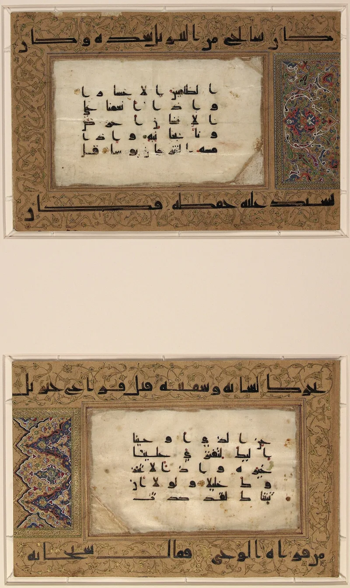
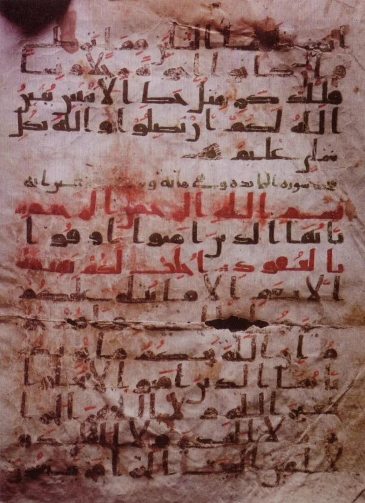
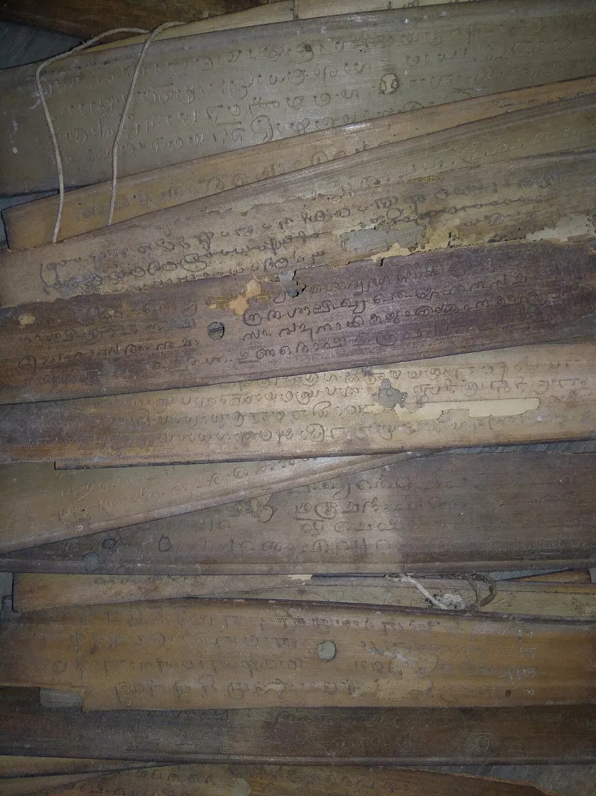

The facts sit in Islam's own trusted sources. You can make this point from their books alone.
Quran 15:9 promises that Allah guards the reminder. This case sets that promise beside what the Sahih collections themselves record.
Every fact below is from Islam's own trusted books.
Sahih al-Bukhari 4986 says no compiled Quran existed when Muhammad died. After heavy losses among reciters at the battle of Yamama, Umar feared "a large part of the Quran may be lost." Zayd ibn Thabit collected it from "palm-leaf stalks, thin white stones, and the hearts of men." The ending of Surah at-Tawbah was found with only one man.
In Sahih Muslim 1452a, Aisha says the five sucklings wording was recited as Quran when the Prophet died. It is in no mushaf.
In Sahih al-Bukhari 6829, Umar affirms the stoning verse was revealed and recited. It is absent too.
In Sunan Ibn Majah 1944, Aisha says the page was under her bedding and a tame sheep ate it. In Sahih Muslim 1050, Abu Musa says: we used to recite a surah resembling Bara'ah, and I have forgotten it.
Al-Azami and IslamQA 175355 answer seriously. Preservation was mainly oral, carried by hundreds of memorisers, so Zayd's work was verification of an already-memorised whole.
"Found with only one man" means one written copy, not one memory. The missing wordings fall under naskh al-tilawah, abrogation of recitation, and 2:106 speaks of verses caused to be forgotten.
The sheep detail rides on a weak chain. Al-Azami argues this was the most rigorous compilation in the history of any scripture.
They admit the facts themselves. All of it is in the Sahih collections.
The abrogation-of-recitation answer is the concession wearing a doctrine: it grants that recited material left the text. It also cannot be tested, since any loss can be declared intentional afterwards, on the authority of the very reports that show the loss.
"Umar said the stoning verse was revealed. Where is it in the Quran now?"



They say the Quran was carried by memory, and the lost wordings were withdrawn.
Al-Azami, IslamQA 175355 and ICRAA answer that the Quran was kept above all by memory. Hundreds of men held the whole text by heart. So Zayd's written work was a check on a whole already known. Found with only one man means one written copy, not one memory.
The missing wordings fall under naskh al-tilawah, the withdrawal of a wording from recitation. God took the words back on purpose. The stoning and suckling wordings lost their place in recitation, though for stoning the ruling stayed. Quran 2:106 names verses caused to be forgotten. The sheep story rests on a weak chain, and stronger chains carry the report without it. Al-Azami's book argues this was the most careful gathering of any scripture in history.
Strong for you: the facts are all in their own Sahih books.
The load-bearing facts are all in the Sahih collections, and mainstream scholarship concedes them. There was no complete compiled codex when the Prophet died. There was fear of loss at Yamama. There were wordings Companions believed to be Quran that are not in today's Quran. And a whole forgotten surah is reported.
The naskh al-tilawah defence is the concession dressed in doctrine. It grants that recited Quranic material left the text, and calls that deliberate. That cannot be tested, and it is circular. Any lost verse can be declared withdrawn after the fact, on the authority of the very reports that show the loss. The promise of 15:9 is kept only by redefining the terms.